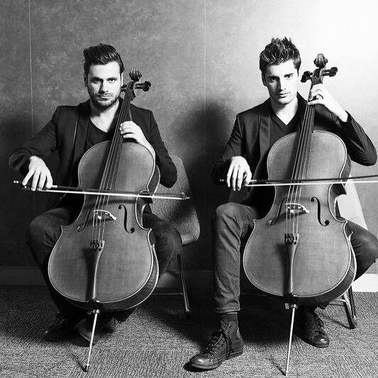

Young Croatian cellists Luka Sulic and Stjepan Hauser, together known as 2CELLOS, continue to soar worldwide as music’s most electric and dynamic instrumental duo, taking the cello to unimagined heights with their incredible talent and undeniable passion. Their playing style breaks down the boundaries between different genres of music, from classical and film music to pop and rock. 2CELLOS have no limits when it comes to performing live – equally as impressive playing Bach and Vivaldi as they are rocking out to AC/DC and Iron Maiden.
2CELLOS began 2017 in the wake of a spectacular performance filmed live at the Sydney Opera House in December 2016, in anticipation of the release of their latest album, Score. The new album celebrates the most popular and enduring music ever written for classic and contemporary movies and television. Exploring a more traditional musical sound, 2CELLOS recorded Score in summer 2016 with the London Symphony Orchestra, with conductor/arranger Robin Smith at the helm. Sulic and Hauser also co-produced Score with Nick Patrick (Jackie Evancho, Il Divo, Plácido Domingo).
In advance of the release of Score, the first video from the album – a medley of themes from Game of Thrones – racked up over 5 million views on YouTube. Score also features memorable themes from The Lord of the Rings, Gladiator, Titanic, Braveheart, The Godfather, Cinema Paradiso, Breakfast at Tiffany’s, Schindler’s List and many more, by some of Sulic and Hauser’s favourite, Oscar-winning composers such as Hans Zimmer, James Horner, Ennio Morricone, John Williams and Henry Mancini.
A world tour follows the release of Score, taking 2CELLOS to some of the world’s most exciting and iconic indoor and outdoor venues – the Royal Albert Hall; Radio City Music Hall in New York; Greek Theater in Los Angeles; Red Rocks in Denver; and Wolf Trap near Washington, D.C., along with dates in Serbia, Croatia, Slovenia, Italy and throughout North America, well into 2018.
2CELLOS rose to fame in 2011 when their version of Michael Jackson’s “Smooth Criminal” took the world by storm. The YouTube video became a massive viral hit leading to a record deal with Portrait/Sony Music Masterworks and an invitation to join Sir Elton John on his worldwide tour. Since then, 2CELLOS has released three commercially successful albums; their self-titled debut (2011) and IN2ITION (2013) and Celloverse (2015).
2CELLOS’ third Celloverse debuted at #1 on both the Billboard Classical and Classical Crossover charts, as well as charting in the Billboard Top 200. The world tour that followed the release of Celloverse resulted in 42 sold-out dates. Plus, the viral video for “Thunderstruck” from that album racked up more than 75 million views to date on YouTube.
Aside from their huge following online where their new YouTube hits continue to amaze, 2CELLOS’ main focus is performing live. In addition to many sold-out solo tours (U.S., Japan, Europe), the duo has toured globally with Sir Elton John, performing with him and opening his shows in massive stadiums. They have also performed in such prestigious venues and events as Madison Square Garden, Paris Olympia, Queen’s Diamond Jubilee, and the Emmy Awards. Onstage, their collaborators have included the Red Hot Chili Peppers, Queens of the Stone Age, George Michael and Lang Lang.
2CELLOS have appeared on major TV shows such as the Today Show, The Tonight Show with Jay Leno, The Ellen DeGeneres Show (multiple times), TV Total with Stefan Raab, ABC’s The Bachelor, CNN’s The Daily Share and many others. They were also the first instrumental act to ever perform on the hugely popular TV series GLEE, where they appeared as special guests in the Michael Jackson tribute episode, performing “Smooth Criminal.” Their arrangement of the song, which featured Naya Rivera, debuted at #10 on the Billboard Hot 100 Digital Songs Chart and helped land the 2CELLOS’ self-titled debut album in the Top 100. Together with superstar pianist Lang Lang, they appeared on the CCTV New Year’s Gala before more than 1 billion viewers.
The success of 2CELLOS extends far beyond YouTube, and their fan base continues to grow around the world through various collaborations. They have teamed with the rock band Queens of the Stone Age, producers T Bone Burnett and Humberto Gatica, as well as the legendary film composer James Newton Howard, on a variety of projects.
Both Sulic and Hauser have played the cello since childhood. Sulic graduated from the acclaimed Royal Academy of Music in London, and Hauser from the Royal Northern College of Music in Manchester, both in 2011.
Sulic has won a series of top prizes at numerous prestigious international music competitions including First and Special Prize at the VII Lutosławski International Cello Competition in Warsaw (2009), First Prize at the European Broadcasting Union “New Talent” Competition (2006) and First Prize at the Royal Academy of Music Patron’s Award in Wigmore Hall (2011) among others. Hauser has worked with acclaimed classical artists such as Mstislav Rostropovich, Bernard Greenhouse, Menahem Pressler and Ivry Gitlis, to mention a few. He has collected no less than twenty-one first prizes at the national and international music competitions and performed twice for Prince Charles in Buckingham and St. James’s Palace.
Both have appeared in major classical music venues throughout the world including Wigmore Hall, Royal Albert Hall, Southbank Centre, Amsterdam Concertgebouw, Vienna’s Musikverein and Konzerthaus.